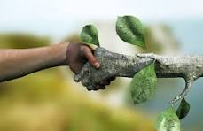
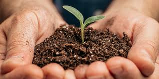
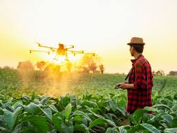

🌳 Preservação Ambiental
Saiba mais
Cuidar das florestas, rios e animais é essencial para manter o equilíbrio ambiental. O agro sustentável mostra que é possível produzir e preservar ao mesmo tempo.

🌾 Produção Sustentável
Saiba mais
A agricultura sustentável utiliza técnicas que aumentam a produção sem prejudicar o solo, a água e a natureza. Assim, o agro cresce de forma responsável e garante alimentos para o futuro.

🚜 Tecnologia no Campo
Saiba mais
Máquinas modernas, drones e sistemas inteligentes ajudam os produtores rurais a economizar recursos naturais e melhorar a produtividade de maneira sustentável.